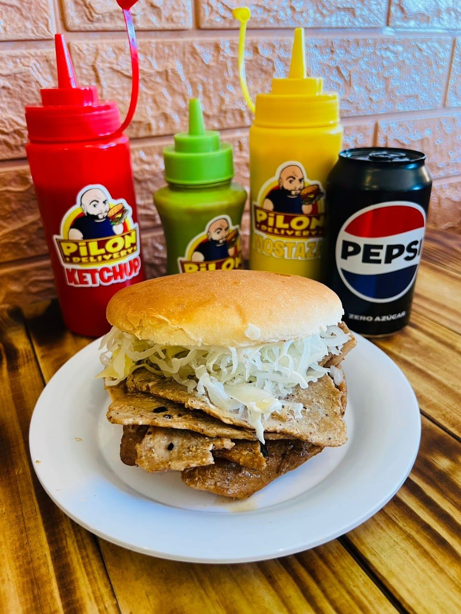
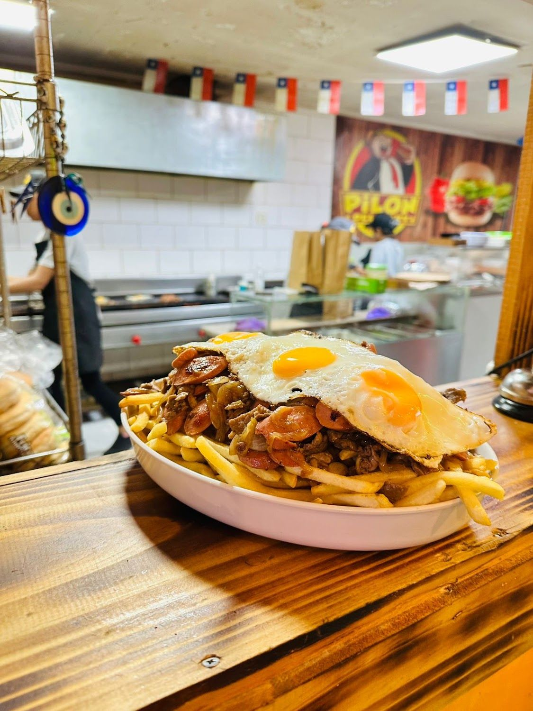
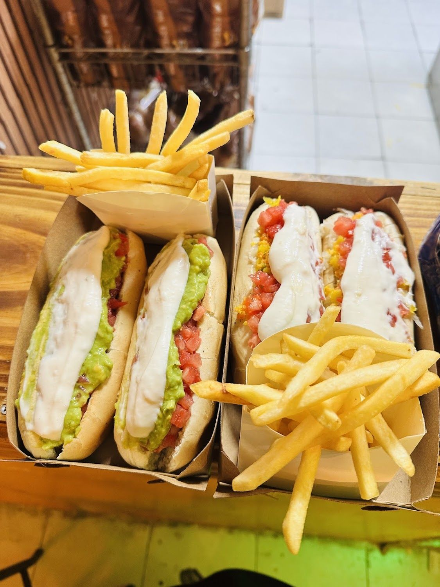
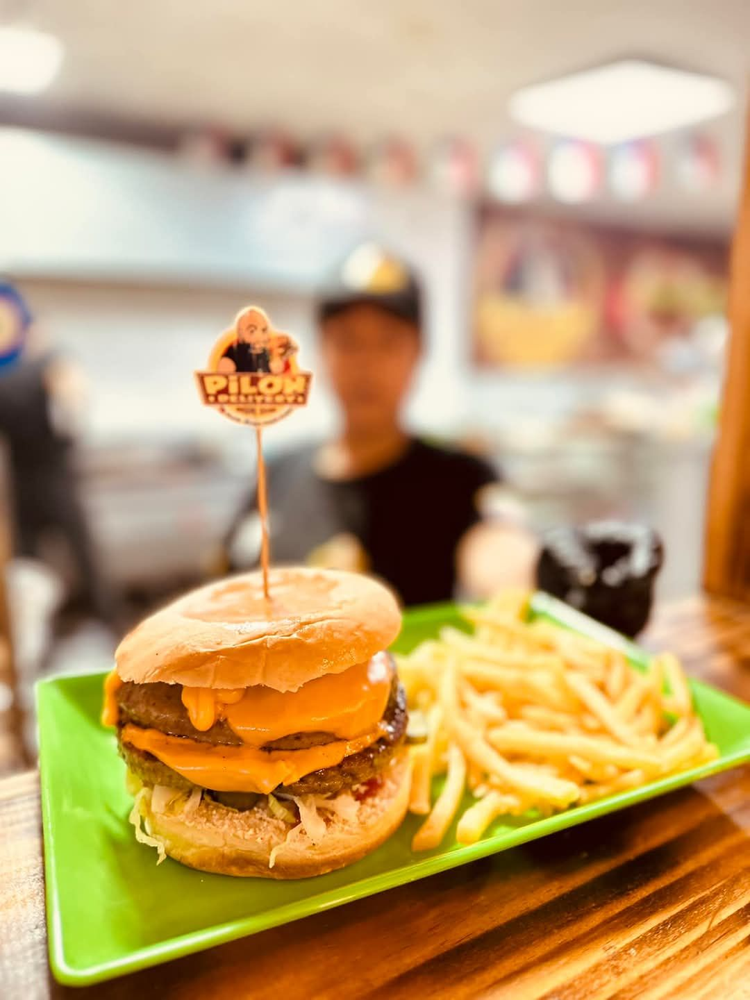
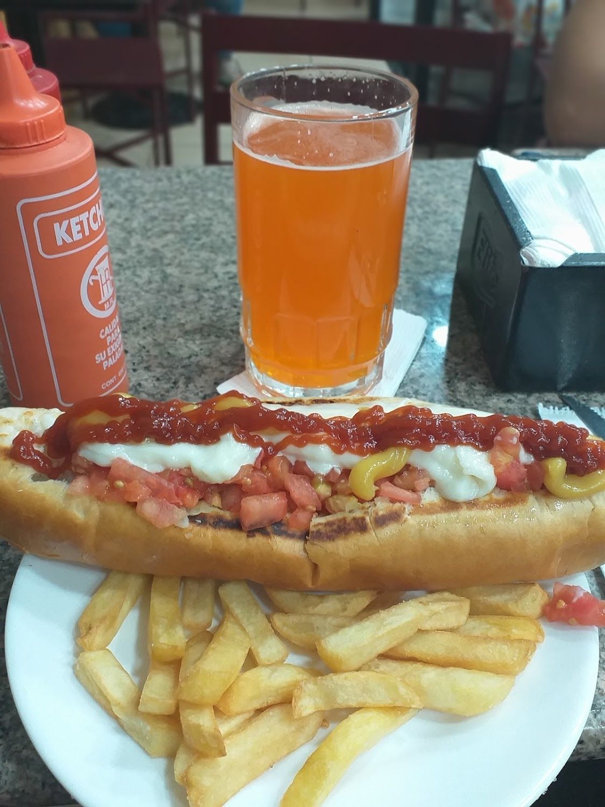
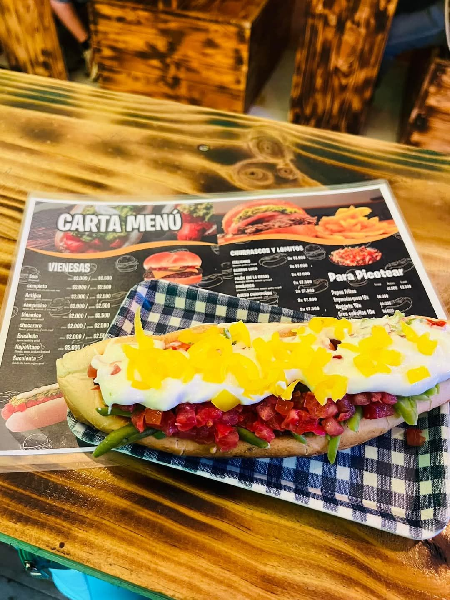
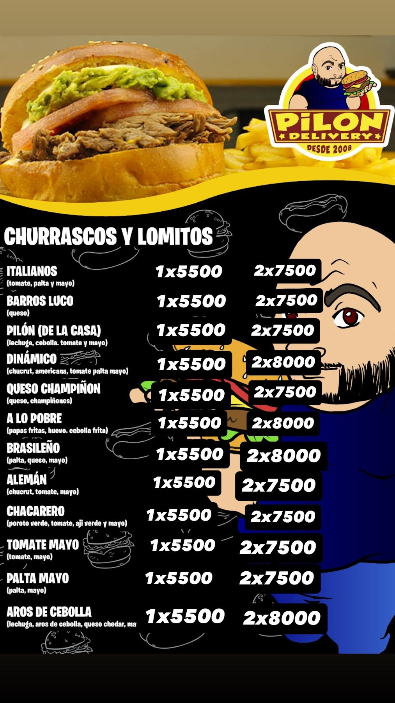
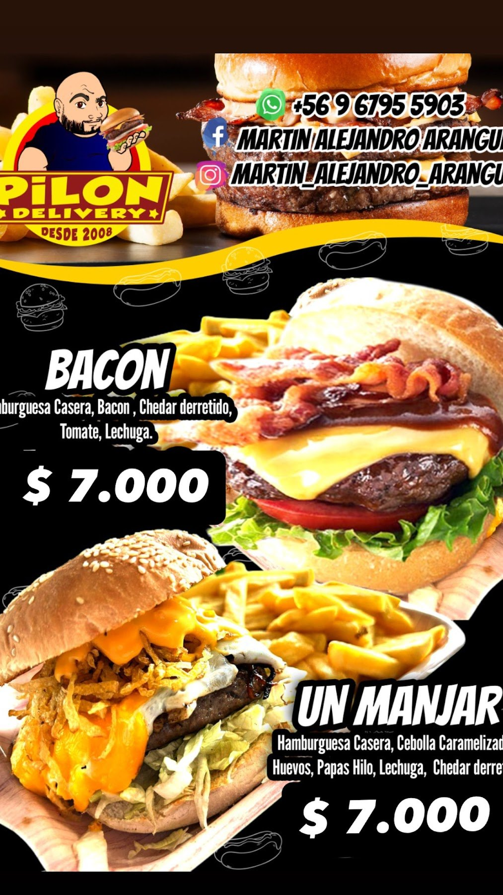

217 reseñas
176 son de cinco estrellas. Es el local con más reseñas de toda esta serie, y con 4,7 de promedio.
Ver el desglose →Las Parcelas 1242 · Quilicura
Churrascos y lomitos a $5.500, hamburguesas caseras a $7.000, completos y chorrillanas. Abrimos a las seis de la tarde y cerramos a la una.
De 18:00 a 01:00 · martes cerrado

176 son de cinco estrellas. Es el local con más reseñas de toda esta serie, y con 4,7 de promedio.
Ver el desglose →Los doce churrascos y lomitos valen lo mismo: $5.500. Dos, entre $7.500 y $8.000.
Ver la carta →“Es atendido por su propio dueño que siempre está de buen humor”, dice un Local Guide.
Conocer el local →Nosotros
Lo dice su propia carta: “Pilón Delivery · desde 2008”.

“El local es pequeño, pero hay mesas para comer y compartir en familia. La atención es rápida, de calidad y es atendido por su propio dueño que siempre está de buen humor.” Daniel Moronta, Local Guide con 52 reseñas
Banderines chilenos colgando del techo, el cartel de Pilón sobre la pared de madera y mesas para sentarse. Google le pone el icono de acceso en silla de ruedas y otro cliente anota que hay estacionamiento gratuito.
En casi todas sus fotos aparecen tres botellas con su propio personaje impreso: la roja del ketchup, la verde del ají y la amarilla de la mostaza. No es decoración comprada: es su marca, y de ahí salen los colores de esta página.
El personaje —calvo, con barba y levantando un sánguche— es el mismo que está en la insignia de su carta, en el cartel del local y en los banderines de cada plato.
Ver la carta completa →



Todas las fotos son del propio local, publicadas en su ficha de Google Maps.
Carta
Transcritos de las dos láminas que ellos mismos publicaron en su ficha de Google.
Los nombres se leen en la foto de su carta impresa. Los precios de esa lámina ya están desactualizados, así que no se copian: conviene preguntarlos.


Las dos láminas están publicadas por ellos mismos en su ficha de Google. Conviene confirmar precios y disponibilidad en el local.
Reseñas
De las 217, 176 son de cinco estrellas.
★★★★★
Son demasiados buenos los lomitos. El local es pequeño, pero hay mesas para comer y compartir en familia. La atención es rápida, de calidad y es atendido por su propio dueño que siempre está de buen humor.
★★★★★
Exelente servicio muy agradable lugar lo recomiendo y buenos precios
★★★★★
Muy rico y a precio justo
Las palabras de arriba las extrae Google automáticamente de las 217 reseñas.
Redes
Sólo lo verificado. Ningún perfil inventado.
El mismo número aparece en su ficha de Google.
Su bio, textual: “los mejores sándwiches de quilicura”.
Su ficha todavía figura sin reclamar, con 217 reseñas.
Visítanos
Las Parcelas 1242
Quilicura, Región Metropolitana
Plus Code J7JM+PH · con estacionamiento gratuito
De 18:00 a 01:00 · martes cerrado
Según su ficha de Google, consultada el 15-09-2026.
Servicios declarados en su ficha de Google. El delivery se pide por WhatsApp: su tienda de Uber Eats está cerrada desde diciembre de 2022.